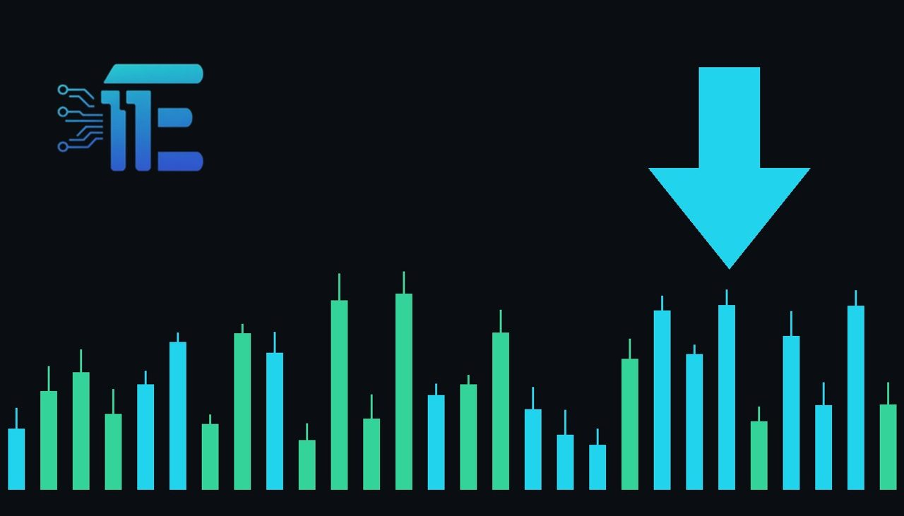

Goldman Sachs Flags China Jewelry Sector Risks on Gold RetreatGoldman Sachs ព្រមានពីហានិភ័យលើវិស័យគ្រឿងអលង្ការចិនក្រោយតម្លៃមាសធ្លាក់ចុះ
XAU/USD impact: ▼ Bearishផលប៉ះពាល់លើ XAU/USD: ▼ ធ្លាក់

Goldman Sachs បានកែសម្រួលទស្សនវិស័យលើភាគហ៊ុនគ្រឿងអលង្ការចិន បន្ទាប់ពីតម្លៃមាសធ្លាក់ចុះយ៉ាងខ្លាំង។ ការដកថយពីកម្រិតកំពូលបង្កផលប៉ះពាល់ដល់ប្រាក់ចំណេញរបស់ក្រុមហ៊ុនលក់រាយគ្រឿងអលង្ការ។
Goldman Sachs បានកែសម្រួលទស្សនវិស័យលើភាគហ៊ុនគ្រឿងអលង្ការចិន បន្ទាប់ពីតម្លៃមាសធ្លាក់ចុះយ៉ាងខ្លាំង។ ការដកថយពីកម្រិតកំពូលបង្កផលប៉ះពាល់ដល់ប្រាក់ចំណេញរបស់ក្រុមហ៊ុនលក់រាយគ្រឿងអលង្ការ។
Goldman Sachs has revised its outlook across Chinese jewelry companies following a significant pullback in precious metal valuations. The investment bank highlighted that bullion has dropped from a January peak of $5,595 per ounce down to approximately $4,041 per ounce. This substantial correction has altered the operating environment for retail jewelry firms operating within the Chinese market.
ធនាគារវិនិយោគ Goldman Sachs បានកែសម្រួលទស្សនវិស័យរបស់ខ្លួនចំពោះក្រុមហ៊ុនគ្រឿងអលង្ការចិន បន្ទាប់ពីតម្លៃលោហធាតុមានតម្លៃបានធ្លាក់ចុះយ៉ាងគំហុក។ ធនាគារនេះបានបង្ហាញថាតម្លៃមាសបានធ្លាក់ចុះពីកម្រិតកំពូលកាលពីខែមករាគឺ 5,595 ដុល្លារក្នុងមួយអោន មកនៅត្រឹមកម្រិតប្រហែល 4,041 ដុល្លារក្នុងមួយអោននាពេលបច្ចុប្បន្ន។ ការកែតម្រូវតម្លៃយ៉ាងខ្លាំងនេះបានផ្លាស់ប្តូរបរិយាកាសអាជីវកម្មសម្រាប់ក្រុមហ៊ុនលក់រាយគ្រឿងអលង្ការនៅក្នុងទីផ្សារប្រទេសចិន។
The bank issued a warning regarding mounting downside risks to corporate earnings across fiscal year 2027 and potentially fiscal year 2028. According to the analysis, persistent spot trading near current price marks could squeeze financial performance for sector participants, highlighting how price shifts directly affect downstream retail demand and merchant margins.
ធនាគារវិនិយោគនេះបានព្រមានអំពីហានិភ័យធ្លាក់ចុះនៃប្រាក់ចំណេញរបស់ក្រុមហ៊ុនក្នុងវិស័យនេះសម្រាប់ឆ្នាំសារពើពន្ធ 2027 និងអាចបន្តដល់ឆ្នាំ 2028។ យោងតាមការវិភាគ ប្រសិនបើតម្លៃ spot នៅតែបន្តស្ថិតនៅកម្រិតបច្ចុប្បន្ន វាអាចដាក់សម្ពាធលើលទ្ធផលហិរញ្ញវត្ថុរបស់ក្រុមហ៊ុនទាំងនោះ ដែលបង្ហាញពីរបៀបដែលការប្រែប្រួលតម្លៃប៉ះពាល់ផ្ទាល់ដល់តម្រូវការលក់រាយ និងប្រាក់ចំណេញរបស់អាជីវករ។
The transmission channel between jewelry demand and spot bullion reflects key physical market dynamics. High price volatility and pullbacks from historic highs often alter consumer buying patterns in major Asian hubs, directly influencing physical gold uptake. When retail jewelry volume softens, spot gold loses an underlying pillar of physical demand that typically cushions pullbacks during financial market consolidations.
ទំនាក់ទំនងរវាងតម្រូវការគ្រឿងអលង្ការ និងតម្លៃមាស spot ឆ្លុះបញ្ចាំងពីសក្ដានុពលទីផ្សាររូបវន្តសំខាន់ៗ។ ការប្រែប្រួលតម្លៃខ្លាំង និងការធ្លាក់ចុះពីកម្រិតខ្ពស់បំផុតជាប្រវត្តិសាស្ត្រតែងតែផ្លាស់ប្តូរទម្លាប់នៃការទិញរបស់អ្នកប្រើប្រាស់នៅក្នុងទីផ្សារអាស៊ីធំៗ ដែលជះឥទ្ធិពលផ្ទាល់ដល់ការស្រូបយកមាសរូបវន្ត។ នៅពេលដែលទំហំនៃការលក់រាយគ្រឿងអលង្ការចុះខ្សោយ តម្លៃមាស spot នឹងបាត់បង់ការគាំទ្រពីតម្រូវការរូបវន្ត ដែលធ្លាប់ជួយទប់ទល់នឹងការធ្លាក់ចុះក្នុងទីផ្សារហិរញ្ញវត្ថុ។
Traders evaluating XAU/USD should assess whether sustained prices near $4,041 per ounce stabilize consumer purchases or prompt prolonged retail inventory adjustments. If physical jewelry appetite in China rebounds, gold could find a stronger price foundation, whereas ongoing sector earnings pressures and subdued consumer engagement may leave bullion vulnerable to further softness.
អ្នកជួញដូរដែលតាមដាន XAU/USD គួរតែពិចារណាថាតើតម្លៃដែលនៅទ្រឹងក្បែរ 4,041 ដុល្លារក្នុងមួយអោន នឹងជួយឱ្យការទិញរបស់អ្នកប្រើប្រាស់មានស្ថិរភាពឡើងវិញ ឬបង្កឱ្យមានការកែសម្រួលស្តុកទំនិញយូរអង្វែង។ ប្រសិនបើតម្រូវការគ្រឿងអលង្ការរូបវន្តនៅប្រទេសចិនងើបឡើងវិញ តម្លៃមាសអាចទទួលបានមូលដ្ឋានរឹងមាំ ប៉ុន្តែប្រសិនបើសម្ពាធប្រាក់ចំណេញក្នុងវិស័យនេះនៅតែបន្តរួមជាមួយតម្រូវការទន់ខ្សោយ នោះមាសអាចប្រឈមនឹងសម្ពាធធ្លាក់ចុះបន្ថែមទៀត។
Key takeawaysចំណុចសំខាន់ៗ
- Gold declined from a January record of $5,595 per ounce to around $4,041 per ounce.
- តម្លៃមាសបានធ្លាក់ចុះពីកម្រិតខ្ពស់ 5,595 ដុល្លារក្នុងមួយអោនកាលពីខែមករា មកនៅត្រឹមប្រហែល 4,041 ដុល្លារ។
- Goldman Sachs warns of earnings downside for Chinese jewelry firms through 2027 and 2028.
- Goldman Sachs ព្រមានពីហានិភ័យធ្លាក់ចុះនៃប្រាក់ចំណេញសម្រាប់ក្រុមហ៊ុនគ្រឿងអលង្ការចិនក្នុងឆ្នាំ 2027 និង 2028។
- Persistent softness at current spot levels presents ongoing challenges for physical gold demand.
- តម្លៃដែលបន្តនៅទាបអាចបង្កើតជាបញ្ហាប្រឈមជាបន្តបន្ទាប់សម្រាប់តម្រូវការមាសរូបវន្ត។
Original commentary by THE MARKET CODE, based on public reporting from Yahoo! Finance: GC=F News. Written with the help of AI. Educational only, not financial advice.
មតិវិភាគដើមដោយ THE MARKET CODE ផ្អែកលើការរាយការណ៍សាធារណៈពី Yahoo! Finance: GC=F News។ សរសេរដោយមានជំនួយពី AI។ មាតិកាអប់រំប៉ុណ្ណោះ មិនមែនជាដំបូន្មានហិរញ្ញវត្ថុទេ។